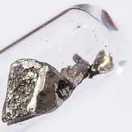

Lanthanum
|  | |||||||||||||||||||||||||||||||||||||||||||||||||||||||||||||||||||||||||||||||||||||||||||||||||||||||||||||||||||||||||||||||||||||||||||||||||||||||||||||||||||||||||||||||||||||||||||||||||||||||||||||||||||||||||||||||||||||
| General properties | |||||||||||||||||||||||||||||||||||||||||||||||||||||||||||||||||||||||||||||||||||||||||||||||||||||||||||||||||||||||||||||||||||||||||||||||||||||||||||||||||||||||||||||||||||||||||||||||||||||||||||||||||||||||||||||||||||||
|---|---|---|---|---|---|---|---|---|---|---|---|---|---|---|---|---|---|---|---|---|---|---|---|---|---|---|---|---|---|---|---|---|---|---|---|---|---|---|---|---|---|---|---|---|---|---|---|---|---|---|---|---|---|---|---|---|---|---|---|---|---|---|---|---|---|---|---|---|---|---|---|---|---|---|---|---|---|---|---|---|---|---|---|---|---|---|---|---|---|---|---|---|---|---|---|---|---|---|---|---|---|---|---|---|---|---|---|---|---|---|---|---|---|---|---|---|---|---|---|---|---|---|---|---|---|---|---|---|---|---|---|---|---|---|---|---|---|---|---|---|---|---|---|---|---|---|---|---|---|---|---|---|---|---|---|---|---|---|---|---|---|---|---|---|---|---|---|---|---|---|---|---|---|---|---|---|---|---|---|---|---|---|---|---|---|---|---|---|---|---|---|---|---|---|---|---|---|---|---|---|---|---|---|---|---|---|---|---|---|---|---|---|---|---|---|---|---|---|---|---|---|---|---|---|---|---|---|---|---|
| Name, symbol | lanthanum, La | ||||||||||||||||||||||||||||||||||||||||||||||||||||||||||||||||||||||||||||||||||||||||||||||||||||||||||||||||||||||||||||||||||||||||||||||||||||||||||||||||||||||||||||||||||||||||||||||||||||||||||||||||||||||||||||||||||||
| Pronunciation | /ˈlænθənəm/ | ||||||||||||||||||||||||||||||||||||||||||||||||||||||||||||||||||||||||||||||||||||||||||||||||||||||||||||||||||||||||||||||||||||||||||||||||||||||||||||||||||||||||||||||||||||||||||||||||||||||||||||||||||||||||||||||||||||
| Appearance | silvery white | ||||||||||||||||||||||||||||||||||||||||||||||||||||||||||||||||||||||||||||||||||||||||||||||||||||||||||||||||||||||||||||||||||||||||||||||||||||||||||||||||||||||||||||||||||||||||||||||||||||||||||||||||||||||||||||||||||||
| Lanthanum in the periodic table | |||||||||||||||||||||||||||||||||||||||||||||||||||||||||||||||||||||||||||||||||||||||||||||||||||||||||||||||||||||||||||||||||||||||||||||||||||||||||||||||||||||||||||||||||||||||||||||||||||||||||||||||||||||||||||||||||||||
|
|||||||||||||||||||||||||||||||||||||||||||||||||||||||||||||||||||||||||||||||||||||||||||||||||||||||||||||||||||||||||||||||||||||||||||||||||||||||||||||||||||||||||||||||||||||||||||||||||||||||||||||||||||||||||||||||||||||
| Atomic number | 57 | ||||||||||||||||||||||||||||||||||||||||||||||||||||||||||||||||||||||||||||||||||||||||||||||||||||||||||||||||||||||||||||||||||||||||||||||||||||||||||||||||||||||||||||||||||||||||||||||||||||||||||||||||||||||||||||||||||||
| Standard atomic weight (±) | 138.90547(7)[1] | ||||||||||||||||||||||||||||||||||||||||||||||||||||||||||||||||||||||||||||||||||||||||||||||||||||||||||||||||||||||||||||||||||||||||||||||||||||||||||||||||||||||||||||||||||||||||||||||||||||||||||||||||||||||||||||||||||||
| Element category | lanthanide, sometimes considered a transition metal | ||||||||||||||||||||||||||||||||||||||||||||||||||||||||||||||||||||||||||||||||||||||||||||||||||||||||||||||||||||||||||||||||||||||||||||||||||||||||||||||||||||||||||||||||||||||||||||||||||||||||||||||||||||||||||||||||||||
| Group, block | group n/a, f-block | ||||||||||||||||||||||||||||||||||||||||||||||||||||||||||||||||||||||||||||||||||||||||||||||||||||||||||||||||||||||||||||||||||||||||||||||||||||||||||||||||||||||||||||||||||||||||||||||||||||||||||||||||||||||||||||||||||||
| Period | period 6 | ||||||||||||||||||||||||||||||||||||||||||||||||||||||||||||||||||||||||||||||||||||||||||||||||||||||||||||||||||||||||||||||||||||||||||||||||||||||||||||||||||||||||||||||||||||||||||||||||||||||||||||||||||||||||||||||||||||
| Electron configuration | [Xe] 5d1 6s2 | ||||||||||||||||||||||||||||||||||||||||||||||||||||||||||||||||||||||||||||||||||||||||||||||||||||||||||||||||||||||||||||||||||||||||||||||||||||||||||||||||||||||||||||||||||||||||||||||||||||||||||||||||||||||||||||||||||||
| per shell | 2, 8, 18, 18, 9, 2 | ||||||||||||||||||||||||||||||||||||||||||||||||||||||||||||||||||||||||||||||||||||||||||||||||||||||||||||||||||||||||||||||||||||||||||||||||||||||||||||||||||||||||||||||||||||||||||||||||||||||||||||||||||||||||||||||||||||
| Physical properties | |||||||||||||||||||||||||||||||||||||||||||||||||||||||||||||||||||||||||||||||||||||||||||||||||||||||||||||||||||||||||||||||||||||||||||||||||||||||||||||||||||||||||||||||||||||||||||||||||||||||||||||||||||||||||||||||||||||
| Phase | solid | ||||||||||||||||||||||||||||||||||||||||||||||||||||||||||||||||||||||||||||||||||||||||||||||||||||||||||||||||||||||||||||||||||||||||||||||||||||||||||||||||||||||||||||||||||||||||||||||||||||||||||||||||||||||||||||||||||||
| Melting point | 1193 K (920 °C, 1688 °F) | ||||||||||||||||||||||||||||||||||||||||||||||||||||||||||||||||||||||||||||||||||||||||||||||||||||||||||||||||||||||||||||||||||||||||||||||||||||||||||||||||||||||||||||||||||||||||||||||||||||||||||||||||||||||||||||||||||||
| Boiling point | 3737 K (3464 °C, 6267 °F) | ||||||||||||||||||||||||||||||||||||||||||||||||||||||||||||||||||||||||||||||||||||||||||||||||||||||||||||||||||||||||||||||||||||||||||||||||||||||||||||||||||||||||||||||||||||||||||||||||||||||||||||||||||||||||||||||||||||
| Density near r.t. | 6.162 g·cm−3 | ||||||||||||||||||||||||||||||||||||||||||||||||||||||||||||||||||||||||||||||||||||||||||||||||||||||||||||||||||||||||||||||||||||||||||||||||||||||||||||||||||||||||||||||||||||||||||||||||||||||||||||||||||||||||||||||||||||
| when liquid, at m.p. | 5.94 g·cm−3 | ||||||||||||||||||||||||||||||||||||||||||||||||||||||||||||||||||||||||||||||||||||||||||||||||||||||||||||||||||||||||||||||||||||||||||||||||||||||||||||||||||||||||||||||||||||||||||||||||||||||||||||||||||||||||||||||||||||
| Heat of fusion | 6.20 kJ·mol−1 | ||||||||||||||||||||||||||||||||||||||||||||||||||||||||||||||||||||||||||||||||||||||||||||||||||||||||||||||||||||||||||||||||||||||||||||||||||||||||||||||||||||||||||||||||||||||||||||||||||||||||||||||||||||||||||||||||||||
| Heat of vaporization | 400 kJ·mol−1 | ||||||||||||||||||||||||||||||||||||||||||||||||||||||||||||||||||||||||||||||||||||||||||||||||||||||||||||||||||||||||||||||||||||||||||||||||||||||||||||||||||||||||||||||||||||||||||||||||||||||||||||||||||||||||||||||||||||
| Molar heat capacity | 27.11 J·mol−1·K−1 | ||||||||||||||||||||||||||||||||||||||||||||||||||||||||||||||||||||||||||||||||||||||||||||||||||||||||||||||||||||||||||||||||||||||||||||||||||||||||||||||||||||||||||||||||||||||||||||||||||||||||||||||||||||||||||||||||||||
vapor pressure (extrapolated)
|
|||||||||||||||||||||||||||||||||||||||||||||||||||||||||||||||||||||||||||||||||||||||||||||||||||||||||||||||||||||||||||||||||||||||||||||||||||||||||||||||||||||||||||||||||||||||||||||||||||||||||||||||||||||||||||||||||||||
| Atomic properties | |||||||||||||||||||||||||||||||||||||||||||||||||||||||||||||||||||||||||||||||||||||||||||||||||||||||||||||||||||||||||||||||||||||||||||||||||||||||||||||||||||||||||||||||||||||||||||||||||||||||||||||||||||||||||||||||||||||
| Oxidation states | 3, 2 (a strongly basic oxide) | ||||||||||||||||||||||||||||||||||||||||||||||||||||||||||||||||||||||||||||||||||||||||||||||||||||||||||||||||||||||||||||||||||||||||||||||||||||||||||||||||||||||||||||||||||||||||||||||||||||||||||||||||||||||||||||||||||||
| Electronegativity | Pauling scale: 1.10 | ||||||||||||||||||||||||||||||||||||||||||||||||||||||||||||||||||||||||||||||||||||||||||||||||||||||||||||||||||||||||||||||||||||||||||||||||||||||||||||||||||||||||||||||||||||||||||||||||||||||||||||||||||||||||||||||||||||
| Ionization energies | 1st: 538.1 kJ·mol−1 2nd: 1067 kJ·mol−1 3rd: 1850.3 kJ·mol−1 |
||||||||||||||||||||||||||||||||||||||||||||||||||||||||||||||||||||||||||||||||||||||||||||||||||||||||||||||||||||||||||||||||||||||||||||||||||||||||||||||||||||||||||||||||||||||||||||||||||||||||||||||||||||||||||||||||||||
| Atomic radius | empirical: 187 pm | ||||||||||||||||||||||||||||||||||||||||||||||||||||||||||||||||||||||||||||||||||||||||||||||||||||||||||||||||||||||||||||||||||||||||||||||||||||||||||||||||||||||||||||||||||||||||||||||||||||||||||||||||||||||||||||||||||||
| Covalent radius | 207±8 pm | ||||||||||||||||||||||||||||||||||||||||||||||||||||||||||||||||||||||||||||||||||||||||||||||||||||||||||||||||||||||||||||||||||||||||||||||||||||||||||||||||||||||||||||||||||||||||||||||||||||||||||||||||||||||||||||||||||||
| Miscellanea | |||||||||||||||||||||||||||||||||||||||||||||||||||||||||||||||||||||||||||||||||||||||||||||||||||||||||||||||||||||||||||||||||||||||||||||||||||||||||||||||||||||||||||||||||||||||||||||||||||||||||||||||||||||||||||||||||||||
| Crystal structure | double hexagonal close-packed (dhcp)
 |
||||||||||||||||||||||||||||||||||||||||||||||||||||||||||||||||||||||||||||||||||||||||||||||||||||||||||||||||||||||||||||||||||||||||||||||||||||||||||||||||||||||||||||||||||||||||||||||||||||||||||||||||||||||||||||||||||||
| Speed of sound thin rod | 2475 m·s−1 (at 20 °C) | ||||||||||||||||||||||||||||||||||||||||||||||||||||||||||||||||||||||||||||||||||||||||||||||||||||||||||||||||||||||||||||||||||||||||||||||||||||||||||||||||||||||||||||||||||||||||||||||||||||||||||||||||||||||||||||||||||||
| Thermal expansion | α, poly: 12.1 µm·m−1·K−1 (at r.t.) | ||||||||||||||||||||||||||||||||||||||||||||||||||||||||||||||||||||||||||||||||||||||||||||||||||||||||||||||||||||||||||||||||||||||||||||||||||||||||||||||||||||||||||||||||||||||||||||||||||||||||||||||||||||||||||||||||||||
| Thermal conductivity | 13.4 W·m−1·K−1 | ||||||||||||||||||||||||||||||||||||||||||||||||||||||||||||||||||||||||||||||||||||||||||||||||||||||||||||||||||||||||||||||||||||||||||||||||||||||||||||||||||||||||||||||||||||||||||||||||||||||||||||||||||||||||||||||||||||
| Electrical resistivity | α, poly: 615 nΩ·m (at r.t.) | ||||||||||||||||||||||||||||||||||||||||||||||||||||||||||||||||||||||||||||||||||||||||||||||||||||||||||||||||||||||||||||||||||||||||||||||||||||||||||||||||||||||||||||||||||||||||||||||||||||||||||||||||||||||||||||||||||||
| Magnetic ordering | paramagnetic[2] | ||||||||||||||||||||||||||||||||||||||||||||||||||||||||||||||||||||||||||||||||||||||||||||||||||||||||||||||||||||||||||||||||||||||||||||||||||||||||||||||||||||||||||||||||||||||||||||||||||||||||||||||||||||||||||||||||||||
| Young's modulus | α form: 36.6 GPa | ||||||||||||||||||||||||||||||||||||||||||||||||||||||||||||||||||||||||||||||||||||||||||||||||||||||||||||||||||||||||||||||||||||||||||||||||||||||||||||||||||||||||||||||||||||||||||||||||||||||||||||||||||||||||||||||||||||
| Shear modulus | α form: 14.3 GPa | ||||||||||||||||||||||||||||||||||||||||||||||||||||||||||||||||||||||||||||||||||||||||||||||||||||||||||||||||||||||||||||||||||||||||||||||||||||||||||||||||||||||||||||||||||||||||||||||||||||||||||||||||||||||||||||||||||||
| Bulk modulus | α form: 27.9 GPa | ||||||||||||||||||||||||||||||||||||||||||||||||||||||||||||||||||||||||||||||||||||||||||||||||||||||||||||||||||||||||||||||||||||||||||||||||||||||||||||||||||||||||||||||||||||||||||||||||||||||||||||||||||||||||||||||||||||
| Poisson ratio | α form: 0.280 | ||||||||||||||||||||||||||||||||||||||||||||||||||||||||||||||||||||||||||||||||||||||||||||||||||||||||||||||||||||||||||||||||||||||||||||||||||||||||||||||||||||||||||||||||||||||||||||||||||||||||||||||||||||||||||||||||||||
| Mohs hardness | 2.5 | ||||||||||||||||||||||||||||||||||||||||||||||||||||||||||||||||||||||||||||||||||||||||||||||||||||||||||||||||||||||||||||||||||||||||||||||||||||||||||||||||||||||||||||||||||||||||||||||||||||||||||||||||||||||||||||||||||||
| Vickers hardness | 360–1750 MPa | ||||||||||||||||||||||||||||||||||||||||||||||||||||||||||||||||||||||||||||||||||||||||||||||||||||||||||||||||||||||||||||||||||||||||||||||||||||||||||||||||||||||||||||||||||||||||||||||||||||||||||||||||||||||||||||||||||||
| Brinell hardness | 350–400 MPa | ||||||||||||||||||||||||||||||||||||||||||||||||||||||||||||||||||||||||||||||||||||||||||||||||||||||||||||||||||||||||||||||||||||||||||||||||||||||||||||||||||||||||||||||||||||||||||||||||||||||||||||||||||||||||||||||||||||
| CAS Registry Number | 7439-91-0 | ||||||||||||||||||||||||||||||||||||||||||||||||||||||||||||||||||||||||||||||||||||||||||||||||||||||||||||||||||||||||||||||||||||||||||||||||||||||||||||||||||||||||||||||||||||||||||||||||||||||||||||||||||||||||||||||||||||
| History | |||||||||||||||||||||||||||||||||||||||||||||||||||||||||||||||||||||||||||||||||||||||||||||||||||||||||||||||||||||||||||||||||||||||||||||||||||||||||||||||||||||||||||||||||||||||||||||||||||||||||||||||||||||||||||||||||||||
| Discovery | Carl Gustaf Mosander (1838) | ||||||||||||||||||||||||||||||||||||||||||||||||||||||||||||||||||||||||||||||||||||||||||||||||||||||||||||||||||||||||||||||||||||||||||||||||||||||||||||||||||||||||||||||||||||||||||||||||||||||||||||||||||||||||||||||||||||
| Most stable isotopes | |||||||||||||||||||||||||||||||||||||||||||||||||||||||||||||||||||||||||||||||||||||||||||||||||||||||||||||||||||||||||||||||||||||||||||||||||||||||||||||||||||||||||||||||||||||||||||||||||||||||||||||||||||||||||||||||||||||
|
|||||||||||||||||||||||||||||||||||||||||||||||||||||||||||||||||||||||||||||||||||||||||||||||||||||||||||||||||||||||||||||||||||||||||||||||||||||||||||||||||||||||||||||||||||||||||||||||||||||||||||||||||||||||||||||||||||||
| Decay modes in parentheses are predicted, but have not yet been observed | |||||||||||||||||||||||||||||||||||||||||||||||||||||||||||||||||||||||||||||||||||||||||||||||||||||||||||||||||||||||||||||||||||||||||||||||||||||||||||||||||||||||||||||||||||||||||||||||||||||||||||||||||||||||||||||||||||||
{kind=link}
Lanthanum is a soft, ductile, silvery-white rare-earth metal element with symbol La and atomic number 57. In the periodic table, it is the first element of the lanthanide series (or, less frequently, the first element of the 6th-period transition metals). It is usually found in combination with cerium and other rare earth elements. Lanthanum oxidizes rapidly when exposed to air. It is produced from the minerals monazite and bastnäsite using a complex multistage extraction process. Lanthanum compounds have numerous applications as catalysts, additives in glass, carbon lighting for studio lighting and projection, ignition elements in lighters and torches, electron cathodes, scintillators, GTAW electrodes, and others. Lanthanum carbonate (La2(CO3)3) has been approved as a medicine for treating renal failure.
Contents
[hide]Properties[edit]
Physical properties[edit]
Lanthanum has a hexagonal crystal structure at room temperature. At 310 °C, lanthanum changes to a face-centered cubic structure. At 865 °C, it changes to a body-centered cubic structure.[3] Lanthanum is easily oxidized; a centimeter-sized sample will completely oxidize within a year.[4] Therefore, it is used in elemental form only for research purposes. Single lanthanum atoms have been isolated by implanting them into fullerene molecules;[5] if carbon nanotubes are filled with these lanthanum-encapsulated fullerenes and annealed, metallic nanochains of lanthanum are produced inside carbon nanotubes.[6]
Chemical properties[edit]
Lanthanum exhibits two oxidation states, +3 and +2, the former being much more stable. For example, LaH3 is more stable than LaH2.[7] Lanthanum burns readily at 150 °C to form lanthanum(III) oxide:
- 4 La + 3 O2 → 2 La2O3
However, when exposed to moist air at room temperature, lanthanum oxide forms a hydrated oxide with a large volume increase.[7] Lanthanum is quite electropositive, reacting slowly with cold water and quite quickly with hot water to form lanthanum hydroxide:
- 2 La (s) + 6 H2O (l) → 2 La(OH)3 (aq) + 3 H2 (g)
Lanthanum metal reacts with all the halogens. The reaction is vigorous if conducted above 200 °C:
- 2 La (s) + 3 F2 (g) → 2 LaF3 (s)
- 2 La (s) + 3 Cl2 (g) → 2 LaCl3 (s)
- 2 La (s) + 3 Br2 (g) → 2 LaBr3 (s)
- 2 La (s) + 3 I2 (g) → 2 LaI3 (s)
In dilute sulfuric acid, lanthanum readily forms solutions containing the La(III) ions, which exist as [La(OH2)9]3+ complexes:[8]
- 2 La(s) + 3 H2SO4 (aq) → 2 La3+(aq) + 3 SO2−
4 (aq) + 3 H2 (g)
Lanthanum combines with nitrogen, carbon, sulfur, phosphorus, boron, selenium, silicon and arsenic at elevated temperatures, forming binary compounds.[7] The electron configuration of the colourless La3+ ion is [Xe] 4f0.[9]
Isotopes[edit]
Naturally occurring lanthanum is composed of one stable (139La) and one radioactive (138La) isotope, with 139La, being the most abundant (99.91% natural abundance). 38 radioisotopes have been characterized - the most stable is 138La with a half-life of 1.05×1011 years, followed by 137La with a half-life of 60,000 years. Most other radioisotopes have half-lives of less than 24 hours, and the majority of these have half-lives less than 1 minute. This element also has three meta states. Lanthanum isotopes range in atomic weight from 117 u (117La) to 155 u (155La).
History[edit]
The word lanthanum comes from the Greek λανθανω [lanthanō] (lit. to lie hidden). Lanthanum was discovered in 1839 by Swedish chemist Carl Gustav Mosander, who partially decomposed a sample of cerium nitrate by roasting it in air and then treating the resulting oxide with dilute nitric acid.[10] From the resulting solution, he isolated a new rare earth he called lantana. Lanthanum was isolated in relatively pure form in 1923.[7]
Lanthanum is the most strongly basic of all the trivalent lanthanides, and it was this property that allowed Mosander to isolate and purify the salts of this element. Basicity separation as operated commercially involved the fractional precipitation of the weaker bases (such as didymium) from nitrate solution by the addition of magnesium oxide or dilute ammonia gas. Purified lanthanum remained in solution. (The basicity methods were only suitable for lanthanum purification; didymium could not be efficiently further separated in this manner.) The alternative technique of fractional crystallization was invented by Dmitri Mendeleev, in the form of the double ammonium nitrate tetrahydrate, which he used to separate the less-soluble lanthanum from the more-soluble didymium in the 1870s. This system was used commercially in lanthanum purification until the development of practical solvent extraction methods that started in the late 1950s. (A detailed process using the double ammonium nitrates to provide 99.99% pure lanthanum, neodymium concentrates and praseodymium concentrates is presented in Callow 1967, at a time when the process was just becoming obsolete.) As operated for lanthanum purification, the double ammonium nitrates were recrystallized from water. When later adapted by Carl Auer von Welsbach for the splitting of didymium, nitric acid was used as a solvent to lower the solubility of the system. Lanthanum is relatively easy to purify, since it has only one adjacent lanthanide, cerium, which itself is very readily removed due to its potential tetravalency.
The fractional crystallization purification of lanthanum as the double ammonium nitrate was sufficiently rapid and efficient, that lanthanum purified in this manner was not expensive. The Lindsay Chemical Division of American Potash and Chemical Corporation, for a while the largest producer of rare earths in the world, in a price list dated October 1, 1958 priced 99.9% lanthanum ammonium nitrate (oxide content of 29%) at $3.15 per pound, or $1.93 per pound in 50-pound quantities. The corresponding oxide (slightly purer at 99.99%) was priced at $11.70 or $7.15 per pound for the two quantity ranges. The price for their purest grade of oxide (99.997%) was $21.60 and $13.20, respectively.
Occurrence[edit]
{kind=link}
Although lanthanum belongs to the element group called rare earth metals, it is not rare at all. Lanthanum is available in relatively large quantities (32 ppm in Earth’s crust). "Rare earths" got their name because they were indeed rare as compared to the "common" earths such as lime or magnesia, and historically only a few deposits were known. Lanthanum is taken into consideration as a rare earth metal because the process to mine is difficult, time consuming and expensive.[7]
Monazite (Ce, La, Th, Nd, Y)PO4, and bastnäsite (Ce, La, Y)CO3F, are the principal ores in which lanthanum occurs, in percentages of up to 25 to 38 percent of the total lanthanide content. In general, there is more lanthanum in bastnäsite than in monazite. Until 1949, bastnäsite was a rare and obscure mineral, not even remotely contemplated as a potential commercial source for lanthanides. In that year, the large deposit at the Mountain Pass rare earth mine in California was discovered. This discovery alerted geologists to the existence of a new class of rare earth deposit, the rare-earth bearing carbonatite, other examples of which soon surfaced, particularly in Africa and China.
Production[edit]
{kind=link}
Lanthanum is most commonly obtained from monazite and bastnäsite. The mineral mixtures are crushed and ground. Monazite, because of its magnetic properties, can be separated by repeated electromagnetic separation. After separation, it is treated with hot concentrated sulfuric acid to produce water-soluble sulfates of rare earths. The acidic filtrates are partially neutralized with sodium hydroxide to pH 3-4. Thorium precipitates out of solution as hydroxide and is removed. After that, the solution is treated with ammonium oxalate to convert rare earths to their insoluble oxalates. The oxalates are converted to oxides by annealing. The oxides are dissolved in nitric acid that excludes one of the main components, cerium, whose oxide is insoluble in HNO3. Lanthanum is separated as a double salt with ammonium nitrate by crystallization. This salt is relatively less soluble than other rare earth double salts and therefore stays in the residue.[7]
The most efficient separation routine for lanthanum salt from the rare-earth salt solution is, however, ion exchange. In this process, rare-earth ions are adsorbed onto suitable ion-exchange resin by exchange with hydrogen, ammonium or cupric ions present in the resin. The rare earth ions are then selectively washed out by a suitable complexing agent, such as ammonium citrate or nitrilotriacetate. Lanthanum can also be separated from a solution of rare earth nitrates by liquid-liquid extraction with a suitable organic liquid, such as tributyl phosphate.[7] Currently, the most widely used extractant for the purification of lanthanum and the other lanthanides is the 2-ethylhexyl ester of 2-ethylhexylphosphonic acid; this has better handling characteristics than the previously used bis-2-ethylhexyl phosphate.
Lanthanum metal is obtained from its oxide by heating it with ammonium chloride or fluoride and hydrofluoric acid at 300-400 °C to produce the chloride or fluoride:
- La2O3 + 6 NH4Cl → 2 LaCl3 + 6 NH3 + 3 H2O
This is followed by reduction with alkali or alkaline earth metals in vacuum or argon atmosphere:
- LaCl3 + 3 Li → La + 3 LiCl
Also, pure lanthanum can be produced by electrolysis of molten mixture of anhydrous LaCl3 and NaCl or KCl at elevated temperatures.[7]
Applications[edit]
{kind=link}
The first historical application of lanthanum was in gas lantern mantles. Carl Auer von Welsbach used a mixture of 60% magnesium oxide, 20% lanthanum oxide, and 20% yttrium oxide which he called Actinophor, and patented in 1885. The original mantles gave a green-tinted light and were not very successful, and his first company, which established a factory in Atzgersdorf in 1887, failed in 1889.[11]
Modern uses of lanthanum include:
{kind=link}
{kind=link}
- One material used for anodic material of nickel-metal hydride batteries is La(Ni3.6Mn0.4Al0.3Co0.7). Due to high cost to extract the other lanthanides a mischmetal with more than 50% of lanthanum is used instead of pure lanthanum. The compound is an intermetallic component of the AB5 type.[12][13]
As most hybrid cars use nickel-metal hydride batteries, massive quantities of lanthanum are required for the production of hybrid automobiles. A typical hybrid automobile battery for a Toyota Prius requires 10 to 15 kg (22–33 lb) of lanthanum. As engineers push the technology to increase fuel economy, twice that amount of lanthanum could be required per vehicle.[14][15]
- Hydrogen sponge alloys can contain lanthanum. These alloys are capable of storing up to 400 times their own volume of hydrogen gas in a reversible adsorption process. Heat energy is released every time they do so; therefore these alloys have possibilities in energy conservation systems.[3][16]
- Mischmetal, a pyrophoric alloy used in lighter flints, contains 25% to 45% lanthanum.[3]
- Lanthanum oxide and the boride are used in electronic vacuum tubes as hot cathode materials with strong emissivity of electrons. Crystals of LaB6 are used in high brightness, extended life, thermionic electron emission sources for electron microscopes, and Hall effect thrusters.[17]
- Lanthanum fluoride (LaF3) is an essential component of a heavy fluoride glass named ZBLAN. This glass has superior transmittance in the infrared range and is therefore used for fiber-optical communication systems.[18]
- Cerium doped lanthanum bromide and lanthanum chloride are the recent inorganic scintillators which have a combination of high light yield, best energy resolution, and fast response. Their high yield converts into superior energy resolution; moreover, the light output is very stable and quite high over a very wide range of temperatures, making it particularly attractive for high temperature applications. These scintillators are already widely used commercially in detectors of neutrons or gamma rays.[19]
- Carbon arc lamps use a mixture of rare earth elements to improve the light quality. This application, especially by the motion picture industry for studio lighting and projection, consumed about 25% of the rare-earth compounds produced until the phase out of carbon arc lamps.[3][20]
- Lanthanum(III) oxide (La2O3) improves the alkali resistance of glass, and is used in making special optical glasses, such as infrared-absorbing glass, as well as camera and telescope lenses, because of the high refractive index and low dispersion of rare-earth glasses.[3] Lanthanum oxide is also used as a grain growth additive during the liquid phase sintering of silicon nitride and zirconium diboride.[21]
- Small amounts of lanthanum added to steel improves its malleability, resistance to impact, and ductility, whereas addition of lanthanum to molybdenum decreases its hardness and sensitivity to temperature variations.[3]
- Small amounts of lanthanum are present in many pool products to remove the phosphates that feed algae.[22]
- Lanthanum oxide additive to tungsten is used in gas tungsten arc welding electrodes, as a substitute for radioactive thorium.[23][24]
- Various compounds of lanthanum and other rare-earth elements (oxides, chlorides, etc.) are components of various catalysis, such as petroleum cracking catalysts.[25]
- Lanthanum-barium radiometric dating is used to estimate age of rocks and ores, though the technique has limited popularity.[26]
- Lanthanum carbonate was approved as a medication (Fosrenol, Shire Pharmaceuticals) to absorb excess phosphate in cases of end-stage renal failure.[27]
- Lanthanum fluoride is used in phosphor lamp coatings. Mixed with europium fluoride, it is also applied in the crystal membrane of fluoride ion-selective electrodes.[7]
- Like horseradish peroxidase, lanthanum is used as an electron-dense tracer in molecular biology.[28]
- Lanthanum modified bentonite (or phoslock) is used to remove phosphates from water in lake treatments.[29]
Biological role[edit]
Lanthanum has no known biological role. The element is very poorly absorbed after oral administration and when injected its elimination is very slow. Lanthanum carbonate (Fosrenol) was approved as a phosphate binder to absorb excess phosphate in cases of end stage renal disease.[27]
While lanthanum has pharmacological effects on several receptors and ion channels, its specificity for the GABA receptor is unique among divalent cations. Lanthanum acts at the same modulatory site on the GABA receptor as zinc- a known negative allosteric modulator. The lanthanum cation La3+ is a positive allosteric modulator at native and recombinant GABA receptors, increasing open channel time and decreasing desensitization in a subunit configuration dependent manner.[30]
Precautions[edit]
Lanthanum has a low to moderate level of toxicity and should be handled with care. The injection of lanthanum solutions produces hyperglycemia, low blood pressure, degeneration of the spleen and hepatic alterations.[31] The application in carbon arc light led to the exposure of people to rare earth element oxides and fluorides, sometimes led to pneumoconiosis.[32][33]
See also[edit]
References[edit]
- Jump up ^ Standard Atomic Weights 2013. Commission on Isotopic Abundances and Atomic Weights
- Jump up ^ Lide, D. R., ed. (2005). "Magnetic susceptibility of the elements and inorganic compounds". CRC Handbook of Chemistry and Physics (PDF) (86th ed.). Boca Raton (FL): CRC Press. ISBN 0-8493-0486-5.
- ^ Jump up to: a b c d e f C. R. Hammond (2000). The Elements, in Handbook of Chemistry and Physics (81st ed.). CRC press. ISBN 0-8493-0481-4.
- Jump up ^ "Rare-Earth Metal Long Term Air Exposure Test". Retrieved 2009-08-08.
- Jump up ^ Tsuchiya, Takahiro; Kumashiro, Ryotaro; Tanigaki, Katsumi et al. (2008). "Nanorods of Endohedral Metallofullerene Derivative". Journal of the American Chemical Society 130 (2): 450–451. doi:10.1021/ja710396n. ISSN 0002-7863. PMID 18095695.
- Jump up ^ Guan, Lunhui; Suenaga, Kazu; Okubo, Shingo; Okazaki, Toshiya; Iijima, Sumio (2008). "Metallic Wires of Lanthanum Atoms Inside Carbon Nanotubes". Journal of the American Chemical Society 130 (7): 2162–2163. doi:10.1021/ja7103069. ISSN 0002-7863. PMID 18225905.
- ^ Jump up to: a b c d e f g h i Patnaik, Pradyot (2003). Handbook of Inorganic Chemical Compounds. McGraw-Hill. pp. 444–446. ISBN 0-07-049439-8. Retrieved 2009-06-06.
- Jump up ^ "Chemical reactions of Lanthanum". Webelements. Retrieved 2009-06-06.
- Jump up ^ Aspinall, Helen C. Chemistry of the f-Block Elements. Gordon and Breach Science Publishers. ISBN 90-5699-333-X.
- Jump up ^ See:
- (Berzelius) (1839) "Nouveau métal" (New metal), Comptes rendus, 8 : 356-357. From p. 356: "L'oxide de cérium, extrait de la cérite par la procédé ordinaire, contient à peu près les deux cinquièmes de son poids de l'oxide du nouveau métal qui ne change que peu les propriétés du cérium, et qui s'y tient pour ainsi dire caché. Cette raison a engagé M. Mosander à donner au nouveau métal le nom de Lantane." (The oxide of cerium, extracted from cerite by the usual procedure, contains almost two fifths of its weight in the oxide of the new metal, which differs only slightly from the properties of cerium, and which is held in it so to speak "hidden". This reason motivated Mr. Mosander to give to the new metal the name Latane.)
- (Berzelius) (1839) "Latanium — a new metal," Philosophical Magazine, new series, 14 : 390-391.
- Jump up ^ "Lighting" (11th ed.). Encyclopædia Britannica (1911). Retrieved 2009-06-06.
- Jump up ^ "Inside the Nickel Metal Hydride Battery" (PDF). Retrieved 2009-06-06.
- Jump up ^ Tliha, M; Mathlouthi, H; Lamloumi, J; Percheronguegan, A (2007). "AB5-type hydrogen storage alloy used as anodic materials in Ni-MH batteries". Journal of Alloys and Compounds 436: 221. doi:10.1016/j.jallcom.2006.07.012.
- Jump up ^ "As hybrid cars gobble rare metals, shortage looms". Reuters 2009-08-31. 2009-08-31.
- Jump up ^ Bauerlein, P; Antonius, C; Loffler, J; Kumpers, J (2008). "Progress in high-power nickel–metal hydride batteries". Journal of Power Sources 176 (2): 547. doi:10.1016/j.jpowsour.2007.08.052.
- Jump up ^ Uchida, H (1999). "Hydrogen solubility in rare earth based hydrogen storage alloys". International Journal of Hydrogen Energy 24 (9): 871. doi:10.1016/S0360-3199(98)00161-X.
- Jump up ^ Jason D. Sommerville & Lyon B. King. "Effect of Cathode Position on Hall-Effect Thruster Performance and Cathode Coupling Voltage" (PDF). 43rd AIAA/ASME/SAE/ASEE Joint Propulsion Conference & Exhibit, 8–11 July 2007, Cincinnati, OH. Retrieved 2009-06-06.[dead link]
- Jump up ^ Harrington, James A. "Infrared Fiber Optics" (PDF). Rutgers University.
- Jump up ^ "BrilLanCe-NxGen" (PDF). Retrieved 2009-06-06.
- Jump up ^ Hendrick, James B. (1985). "Rare Earth Elements and Yttrium". Mineral Facts and Problems. Bulletin 675. Bureau of Mines. p. 655.
- Jump up ^ Kim, K; Shim, Kwang Bo (2003). "The effect of lanthanum on the fabrication of ZrB2–ZrC composites by spark plasma sintering". Materials Characterization 50: 31. doi:10.1016/S1044-5803(03)00055-X.
- Jump up ^ Pool Care Basics. pp. 25–26.
- Jump up ^ Howard B. Cary (1995). Arc welding automation. CRC Press. p. 139. ISBN 0-8247-9645-4.
- Jump up ^ Larry Jeffus. (2003). "Types of Tungsten". Welding : principles and applications. Clifton Park, N.Y.: Thomson/Delmar Learning. p. 350. ISBN 978-1-4018-1046-7.
- Jump up ^ C. K. Gupta; Nagaiyar Krishnamurthy (2004). Extractive metallurgy of rare earths. CRC Press. p. 441. ISBN 0-415-33340-7.
- Jump up ^ S. Nakai; A. Masuda; B. Lehmann (1988). "La-Ba dating of bastnaesite" (PDF). American Mineralogist 7: 1111.
- ^ Jump up to: a b "FDA approves Fosrenol(R) in end-stage renal disease (ESRD) patients". 28 October 2004. Retrieved 2009-06-06.
- Jump up ^ Chau YP; Lu KS (1995). "Investigation of the blood-ganglion barrier properties in rat sympathetic ganglia by using lanthanum ion and horseradish peroxidase as tracers". Acta Anatomica (Basel) 153 (2): 135–144. doi:10.1159/000313647. ISSN 0001-5180. PMID 8560966.
- Jump up ^ Hagheseresht; Wang, Shaobin; Do, D.D. (2009). "A novel lanthanum-modified bentonite, Phoslock, for phosphate removal from wastewaters". Applied Clay Science 46 (4): 369–375. doi:10.1016/j.clay.2009.09.009.
- Jump up ^ Boldyreva, A. A. (2005). "Lanthanum Potentiates GABA-Activated Currents in Rat Pyramidal Neurons of CA1 Hippocampal Field". Bulletin of Experimental Biology and Medicine 140 (4): 403–5. doi:10.1007/s10517-005-0503-z. PMID 16671565.
- Jump up ^ Pof. Dr. M. Zafar Iqbal. Elements in Health and Disease. Dr. Ahsan Iqbal. pp. 23–. GGKEY:KEU6L0DDWZJ.
- Jump up ^ Dufresne, A; Krier, G; Muller, J; Case, B; Perrault, G (1994). "Lanthanide particles in the lung of a printer". Science of the Total Environment 151 (3): 249–252. doi:10.1016/0048-9697(94)90474-X. PMID 8085148.
- Jump up ^ Waring, PM; Watling, RJ (1990). "Rare earth deposits in a deceased movie projectionist. A new case of rare earth pneumoconiosis". The Medical journal of Australia 153 (11–12): 726–30. PMID 2247001.
Further reading[edit]
- The Industrial Chemistry of the Lanthanons, Yttrium, Thorium and Uranium, by R. J. Callow, Pergamon Press, 1967
- Extractive Metallurgy of Rare Earths, by C. K. Gupta and N. Krishnamurthy, CRC Press, 2005
- Nouveau Traite de Chimie Minerale, Vol. VII. Scandium, Yttrium, Elements des Terres Rares, Actinium, P. Pascal, Editor, Masson & Cie, 1959
- Chemistry of the Lanthanons, by R. C. Vickery, Butterworths 1953
External links[edit]
| Look up lanthanum in Wiktionary, the free dictionary. |
| Wikimedia Commons has media related to Lanthanum. |
| [hide] Periodic table (Large cells) | |||||||||||||||||||||||||||||||||
|---|---|---|---|---|---|---|---|---|---|---|---|---|---|---|---|---|---|---|---|---|---|---|---|---|---|---|---|---|---|---|---|---|---|
| 1 | 2 | 3 | 4 | 5 | 6 | 7 | 8 | 9 | 10 | 11 | 12 | 13 | 14 | 15 | 16 | 17 | 18 | ||||||||||||||||
| 1 | H | He | |||||||||||||||||||||||||||||||
| 2 | Li | Be | B | C | N | O | F | Ne | |||||||||||||||||||||||||
| 3 | Na | Mg | Al | Si | P | S | Cl | Ar | |||||||||||||||||||||||||
| 4 | K | Ca | Sc | Ti | V | Cr | Mn | Fe | Co | Ni | Cu | Zn | Ga | Ge | As | Se | Br | Kr | |||||||||||||||
| 5 | Rb | Sr | Y | Zr | Nb | Mo | Tc | Ru | Rh | Pd | Ag | Cd | In | Sn | Sb | Te | I | Xe | |||||||||||||||
| 6 | Cs | Ba | La | Ce | Pr | Nd | Pm | Sm | Eu | Gd | Tb | Dy | Ho | Er | Tm | Yb | Lu | Hf | Ta | W | Re | Os | Ir | Pt | Au | Hg | Tl | Pb | Bi | Po | At | Rn | |
| 7 | Fr | Ra | Ac | Th | Pa | U | Np | Pu | Am | Cm | Bk | Cf | Es | Fm | Md | No | Lr | Rf | Db | Sg | Bh | Hs | Mt | Ds | Rg | Cn | 113 | Fl | 115 | Lv | 117 | 118 | |
|
|
|||||||||||||||||||||||||||||||||
|
||
|
||